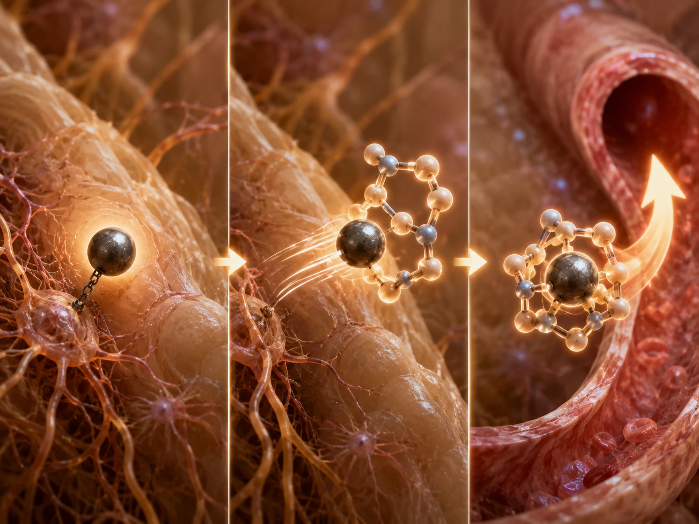

Çözüm yaklaşımım: Kronik tinnitusum için somut olarak ne yaptım?
Son güncelleme: Haziran 2026
Burada okuduğun şey, kişisel deneyimime dayanan kendi yolumdur. Tıbbi soruların ya da sağlığınla ilgili endişelerin varsa lütfen güvendiğin bir doktora başvur. Burada anlatılan yaklaşımları uygulama sorumluluğu sana aittir.
Peki, o dönemde kronik tinnitusum için somut olarak ne yaptım?
“Sadece bekleyip sesi görmezden gelmek” bende işe yaramadı. Bunun üzerine şu karara vardım: Daha fazlasını yapmam gerekiyordu. Bunun neden böyle geliştiğini dilersen kısa hikâyemde okuyabilirsin.
Benim yaklaşımım açısından bunun anlamı şuydu: Üç şeyi kesinlikle aynı anda yapmam gerekiyordu:
- Mekanik iş yükünü azaltmak — gürültü zirvelerinden ve kronik gürültüden olabildiğince kaçınmak; böylece zaten ağır biçimde yük altında olan iyon pompaları bir de ek olarak aşırı yüklenmesin.
- Hücresel enerji üretimini (ATP) muazzam ölçüde artırmak — çünkü enerji fazlası olmadan asıl onarım (yeni crosslinker proteinlerini yerleştirmek, duyu tüylerinin iskeletini yeniden dikleştirmek) başlayamaz. Aksi hâlde hücre, gürültüye bağlı tinnitusla ilgili açıklama sayfamda anlattığım gibi hamster çarkına sıkışıp kalır.
- Uygun yapı malzemesini sağlamak — yani hücrenin yeni crosslinker proteinleri ve aktin yapıları oluşturup hasarlı demeti yeniden sıkıca birbirine yapıştırmak için kullanabileceği yapı taşlarını.
Burada, bende dönüm noktasını yaratan kendi sürecimin tam olarak nasıl ilerlediğini adım adım anlatıyorum:
Kısa özet 60 saniyede oku — üç yola genel bakış
Üç tinnitus türü, üç farklı kaldıraç. Gürültüye bağlı tinnitusta benim yolum gürültü diyeti, en üst düzeye çıkarılmış derin uyku evreleri ve ATP üretimini artıran, aksatmadan uygulanan bir besin öğesi protokolünün (B vitaminleri, niasin, Q10, Omega-3, lesitin, mineraller, melatonin) birleşimiydi — böylece hücre hamster çarkından çıkıp yeni crosslinker proteinlerini yerleştirebilecekti. Üç ila dört ay sonra tinnitusum kayboldu. Strese bağlı tinnitusta benim yolum, Michael Prgomet'in yaklaşımına göre çatışmalar üzerinde çalışmak olurdu: kinezyolojik kas testiyle aktif gerilim alanlarını bulmak, depolanmış duyguları testle belirlenen bir süre boyunca “bağlamak” ve asıl iyileşmenin geceleri rüya işleme sürecinde gerçekleşmesine izin vermek. İlaç ve toksin kaynaklı tinnitusta en önemli kaldıraç kaynaktır: doktor tarafından yapılacak tanısal değerlendirme (mobilizasyon testi dâhil), amalgam dolguların sökülmesi, ağır metallerin doktor gözetiminde şelatlayıcılarla vücuttan uzaklaştırılması ya da ilaç söz konusuysa doktorla görüşerek ilacın bırakılması. Onarım yapı taşları (lesitin, Omega-3, protein, uyku) hasarın ağırlığına göre onarımı destekler; bu destek yapısal hasarlarda tam enerji protokolüne kadar çıkabilir.
Ortak tutum: Bedene, kendini yeniden dengeye getirebilmesi için ihtiyaç duyduğu şeyi vermek.
1. Bölüm: Gürültüye bağlı tinnitusta benim yolum
1. Sütun: İş yükünü azaltmak
1. Gürültü diyeti (mekanik mola)

Bu, benim en önemli farkındalıklarımdan biriydi: Tinnitustan etkilenenlerin neredeyse tamamı sesten korktukları için kendilerini sürekli sesle kuşatıyor — başlangıçta ben de büyük ölçüde aynısını yaptım (o dönemde uykuya dalmak için çoğunlukla YouTube'daki gürültü videolarını ya da açık televizyonu kullanıyordum). Ama ses, mekanik harekettir. Her maskeleme sesi stereosilyaları hareket etmeyi sürdürmeye zorlar — bu, saf fiziktir.
Hasarlı tüy hücrelerinde, stereosilyalarının eğri durması nedeniyle dışarıdan herhangi bir hareket olmasa bile kalıcı olarak artmış bir iyon girişi vardır. Her ek ses yükü daha da fazla iyon akışına, dolayısıyla hücre üzerinde daha da ağır bir yüke yol açar. Sonuç: Bu kalıcı kaçak yüzünden zaten kesintisiz çalışan iyon pompaları, yaklaşan çöküşü önlemek için yük sınırlarına daha da fazla itilir.
Bir de en az bunun kadar ağır ikinci bir sorun eklenir: Sürekli ses yükü ve güçlü gürültü zirveleri, hasarlı demetteki aktin filamentlerinin birbirine göre kaymasına yol açar. Hücre yeterli enerji ve yapı malzemesi sayesinde filamentlerin arasına yeni crosslinker proteinleri yeniden yerleştirip iskeleti birbirine yapıştırabilecek hâle gelir gelmez, sürekli mekanik yük tam da yeni yerleştirilen bu crosslinker proteinlerini, sıkıca bağlanmalarına fırsat kalmadan yeniden yerlerinden sarsıp çıkarır. İki taşın arasına taze harç çekmeye çalıştığını, bu sırada birinin taşları durmaksızın ileri geri oynattığını düşün. Sonuç aynı: Hücre binbir zahmetle yeniden inşa ederken ses de aynı anda onun emeğini tekrar yıkar.
(Bunun hücresel düzeyde neden böyle olduğunu anlamak istersen, mekanizmanın tamamını gürültüye bağlı tinnitusla ilgili açıklama sayfamda bulabilirsin.)
O noktadan sonra yaklaşımım şuydu: Daha fazla sessizliğe alan açmayı, başka bir deyişle günlük hayatımda elimden geldiğince az ses yüküne yer vermeyi öğrenmem gerekiyordu — hem de tinnitusum tamamen kaybolana kadar bütün dönem boyunca. Çünkü kendi adıma vardığım sonuç şuydu: Ancak dışarıdan gelen mekanik uyarım durduğunda zaten yüksek devirde çalışan iyon pompaları biraz olsun nefes alır — hücre de böylece enerjisinin bir bölümünü iskeletin onarımı için serbest bırakma fırsatı bulur.
Bu sırada kendim için bir temel kural belirlemiştim: Hücre enerjiyle (ATP) ve yapı malzemesiyle ne kadar iyi beslenirse, sesin yarattığı mekanik yükü yeniden o kadar erken tolere edebilir. Bu tampon düzeyine ne zaman ulaşıldığı son derece bireyseldir; başlangıç durumuna, hasarlı frekans aralığına ve genel bünyeye bağlıdır.
Bu kuralı kendi bedenimde iki ayrı süreçte yaşadım: İlk tinnitusumda (2011) temel olarak besinlerle desteklenmiş olsam da büyük ölçüde stres enerjisi ve kortizolle çalışıyordum — enerji düzeyim sonraki döneme kıyasla belirgin biçimde daha düşüktü (yaklaşık bir yıl sonra bende ağır bir kronik yorgunluk sendromunun patlak vermesi boşuna değildi). Buna uygun olarak o dönemde son derece katı yaşamak zorundaydım — aylar boyunca neredeyse mutlak sessizlik; müzik yok, kulaklık yok, gündelik gürültü yok. Saatin her tik takından bile kaçınmıştım.
Bundan sonra anlatacağım şey o dönemde çok riskliydi ve kalıcı hasar bırakabilirdi. Kesinlikle aynısını yapma.
İkinci tinnitusumda (2016/17) ise durum farklıydı; onu o dönemde bilinçli olarak bir deney şeklinde tetiklemiştim: Yıllar boyunca kararlılıkla sürdürdüğüm besin desteği ve çok daha iyi uyku sayesinde ATP depom bambaşka bir düzeydeydi. Bu kez akıllı bir uzlaşma yetti — gürültü zirvelerinden kararlılıkla kaçınmak (kulaklık yok, sonuna kadar açılmış müzik sistemi yok, disko yok), ama bunun dışında tamamen normal yaşamak. Alışverişe gittim, panayıra gittim, sinemaya gittim, arkadaşlarımla buluştum. Buna rağmen tinnitus yaklaşık üç ila dört ay sonra tamamen kaybolmuştu. (Her iki iyileşmenin tam hikâyesini kısa hikâyemde bulabilirsin.)
Benim için bu, asıl sorunun “Kendimi ne kadar aşırı ölçüde geri çekmem gerekiyor?” değil, “Hücrem şu anda ne kadar iyi besleniyor?” olduğuna dair en çarpıcı kanıttı. ATP düzeyim ne kadar yüksekse ve yapı malzemesi ne kadar iyiyse, sistemim gündelik hayattaki o kadar fazla sesi kaldırabiliyordu — onarım da buna paralel olarak o kadar hızlı ilerliyordu.
2. Hücresel gece vardiyası (derin uyku evrelerini en üst düzeye çıkarmak)
Bunun yanı sıra yeterli sayıda derin uyku evresi yaşamam benim için mutlak biçimde hayatiydi. Derin uykuda beden hücresel onarım süreçlerini hızlandırır — bu, fizyolojik olarak iyi belgelenmiştir. Büyüme hormonları salgılanır, protein sentezi artar ve bağışıklık faaliyeti yükselir.
Bu özellikle işitme sistemi için geçerlidir: Kulak öyle bir yapıya sahiptir ki çevreden gelen uyarılar gece büyük ölçüde azaldığı ve artık aktif ve analitik biçimde işitmek zorunda olmadığı için geceleri toparlanabilir. Hücrenin kendi onarımı için ihtiyaç duyduğu kapasite ve enerji, tam da bu aktif işitme işinin ortadan kalkmasıyla serbest kalır. Bu nedenle derin uyku, bütün süreçte benim için mutlak biçimde belirleyici bir etkendi.
2. Sütun: Enerjiyi en üst düzeye çıkarmak (benim kişisel yaklaşımım)
Uyku ve gürültüden kaçınma (1. sütun), ilk tinnitusum (2011) sırasında başlangıçta bende ilk hissedilir düzelmeleri sağladı. Sistem biraz sakinleşti. Ama bir noktada görünmez bir duvara çarptım — bütün o dinlenmeye rağmen ilerlemenin bir türlü devam etmediği bir platoya. Geriye dönüp baktığımda bugün bu bana anlamlı geliyor: Hücre hâlâ hamster çarkına sıkışmıştı. Dinlenme tek başına asıl onarımı başlatmaya yetmiyordu. Eksik olan düpedüz enerjiydi.
Bunun üzerine ilk tinnitusum sırasında, uzun ve zahmetli bir süreçte kendi besin denemelerimle bu enerji sorununa yavaş yavaş yaklaşmaya çalıştım — B12 enjeksiyonları, lesitin ve geniş kapsamlı bir ortomoleküler set. Bu yolun tamamı biyografimin 1. bölümünde ayrıntılı biçimde anlatılıyor. Sonunda işe yaradı, ama verimli olmaktan çok uzaktı.
Çökmüş hücrelerde ATP'nin sistemli ve hızlı biçimde nasıl yeniden yükseltilebileceğine ilişkin belirleyici dönüm noktasını ancak bir süre sonra yaşadım — üstelik kulağımda değil, bütün bedenimde. 2013'te kronik yorgunluk sendromunun (CFS) dibine düşmüştüm; belgelenmiş ATP değerim 0,37'ydi ve neredeyse tamamen yatağa bağımlıydım. Beni orada yeniden ayağa kaldıran şey, özel bir sıvı besin konseptinin, adım adım artırılan dolaşım antrenmanının (o dönemde dolaşım sistemim dibe vurmuştu; enerji söz konusu olduğunda işleyen bir dolaşım sistemi kilit unsurdur) ve belirgin biçimde iyileştirilmiş uykunun birleşimiydi. Bu birleşim enerji metabolizmamı öylesine güçlü biçimde hızlandırmıştı ki iki ay içinde yatağa bağımlılıktan çıkıp hayata geri döndüm — günlük yaşama yeniden normal biçimde katılabiliyor ve spor yapabiliyordum. Ardından gelen iki yıl içinde sonunda fiziksel olarak son derece zorlayıcı tam zamanlı bir işe bile geri döndüm.
Yıllar sonra ikinci bir tinnitusla karşı karşıya kaldığımda, ilk kez elimde gerçek ve sınanmış bir sistem vardı. Tinnitusun altında CFS'dekiyle aynı hücresel nedenin — burada hasarlı stereosilyaların onarımını engelleyen ağır bir ATP enerjisi eksikliğinin — yattığından emin olduğum için, bu kez deneyerek beklemeden bütün protokolüme hemen başladım. Tam da bu besin sistemini bu kez özellikle kulaklarım için kişisel bir “baypas” olarak yeniden kullandım.
Temel koşul: Yeterince ye
Somut günlük düzene geçmeden önce, kulağa o kadar basit geldiği için tinnitustan etkilenenlerin çoğu tarafından tamamen göz ardı edilen bir nokta var — tam da bu yüzden onu açıkça en başa koymak istiyorum: Yeterince ye. ATP son tahlilde kalorilerden üretilir. Bedeninin gerçekten yakabildiği karbonhidratlardan ve yağlardan. Bu onarım evresinde aynı zamanda diyet yapan ya da kalori açığıyla yaşayan kişi kendi bindiği dalı keser — hücresel onarım için mevcut enerji belirgin biçimde azalır. Bu enerji temeli olmadan işler gerçekten çok zorlaşır.
Bu temelde, o dönemde günlük düzenim şöyleydi:
1. Sabah enerji vuruşu
Yukarıda anlattığım gibi, uyarlanmış yaşam tarzıyla birlikte beni daha önce CFS'den çıkarmış olan aynı ürünleri yeniden kullandım — günlük düzeni zaten tam olarak biliyor, enerji düzeyim üzerinde ne gibi etkiler yarattığını da biliyordum. Günüm, uyandıktan hemen sonra aç karnına başlıyordu. Büyük bir bardak suya B vitaminleri ve niasin içeren bir besin konsantresi karıştırıyordum. Buna ek olarak sabahları her zaman yarım litre sade su içiyordum — bunu bilinçli olarak yapıyordum; kan daha akışkan hâle gelsin ve taşıma daha en başından iyi yürüsün diye.
O sırada olan şuydu: İçtikten kısa süre sonra tipik niasin flush'ı başladı — yüzüm ısındı, kulaklarım kızardı. Niasin periferik kan damarlarını genişletir — benim için bu, taşıma yolunun o anda iyice açılmış olduğunun hissedilir doğrulamasıydı. Çünkü hücrenin içindeki ATP düzeyini yükseltmek son derece belirleyicidir — iç kulağın en ince kılcal damarlarındaki kan akışı ne kadar serbestse, hücreye sağlanan her şey de hedefine o kadar iyi ulaşır. Flush benim için hissedilir bir sinyaldi: Yakıt ve yapı malzemesinin artık tüy hücresine ulaşmak için önünde açık bir yol vardı.
Önemli bir ayrım: Niasini aldığım dozda (ürün sayfasına bak) flush hissedilir ama orta düzeydedir — yüz ve kulaklar ısınır, bazen kızarır; zaman zaman eller de. Bazı videolardaki gibi, insanların saf niasini gramlarca alıp tepeden tırnağa ıstakoz gibi kıpkırmızı kesildiği o aşırı tepki değil. Bu şiddetli etki kural olarak ancak belirgin bir aşırı dozda ortaya çıkar. Daha önce hiç niasin kullanmamış biri ilk seferde yine de biraz ürkebilir — tepki zararsızdır ve 20 ila 30 dakika içinde kendiliğinden geçer.
2. Temel destek (yaklaşık 30 dakika sonra)
Yaklaşık 30 dakika sonra geniş kapsamlı bir besin preparatı alıyordum. Amacım, metabolizmanın gün boyu istikrarlı çalışması ve enerji boşlukları oluşmaması için bedene sabah boyunca geniş kapsamlı bir besin desteği sağlamaktı. Burada yağda çözünen vitaminlerin ve C vitamininin payı benim için özellikle önemliydi — yağda çözünen vitaminler hem hücre korumasında hem de enerji üretiminde doğrudan kofaktör olarak güçlendirici bir rol oynar; C vitamini ise suda çözünen bir kofaktör olarak sayısız metabolik sürece katılır. Birisi “tek bir vitamini” ya da “tek bir minerali” aradığında çoğu zaman gözden kaçan tam da bu birleşimdir.
Bu besin içeceğinin içine aynı anda Q10 eklenmiş Omega-3 yağından birkaç damla koyup hepsini birlikte içiyordum. Bu birleşim tesadüf değildi: Adından da anlaşılacağı gibi, yağda çözünen vitaminlerin beden tarafından gerçekten doğru biçimde emilebilmesi için yağa ihtiyaçları vardır. Q10 da yağda çözündüğü için Omega-3 yağıyla birlikte taşınıyordu. Basit ama çok etkili bir birleşim.
Q10'un protokolümde somut bir görevi var — Heilpraktikerim bunu o dönemde bana şöyle açıklamıştı: Q10, mitokondrilerin solunum zincirinin tam içinde yer alır ve özellikle karbonhidrat metabolizmasını ateşler. Yakıtı kullanılabilir enerjiye dönüştürürken ek bir yardımcı gibi çalışır. Hamster çarkı senaryosunda mutlak darboğaz ATP'dir. İyon pompaları kalıcı kaçağı yönetmek için mevcut enerjinin tamamını yuttuğu sürece, yukarıda stereosilya iskeletinde çalışan inşaat işçilerine düpedüz hiçbir şey kalmaz. Asıl onarım ancak bir enerji fazlası olduğunda devreye girebilir — yeni crosslinker proteinlerini yerleştirmek, demeti yeniden sağlam bir çubuk hâlinde birbirine yapıştırmak.
3. Lesitin (gün içinde, öğünlerden sonra)
Lesitini sabit bir düzene bağlı kalmadan alıyordum — çoğunlukla bir öğünün ardından, gün içine yayarak; sık sık öğle ile akşam arasında. Lesitin, pompaların, reseptörlerin ve yapıların ancak düzgün biçimde yerlerine oturabildiği hücre zarları için fosfolipitleri, yani ham maddeyi sağlar.
4. Gece onarım evresi (akşam)
Uyumadan yaklaşık bir saat önce, içinde magnezyumun da bulunduğu bir mineral içeceği içiyor ve melatonini doğrudan onun içine karıştırıyordum. Böylece ikisini tek seferde alabiliyordum. Magnezyum ve diğer mineraller bedenin dinlenme moduna geçmesine yardımcı olur; melatonin ise uykuya dalmayı ve derin uykuyu destekler. Hücrenin hasarlı iskeleti gerçekten yeniden kurabilmesi için tam da bu evreye ihtiyacı vardı: Geceleri kulağa gelen mekanik uyarılar büyük ölçüde ortadan kalkar, pompalar artık mutlak sınırda çalışmak zorunda kalmaz ve serbest kalan enerji asıl onarıma akabilir.
O dönemde kullandığım kesin miktarları ve dozları, tek tek ürünlerle ilgili bütün ayrıntıları ve kişisel uyarlamaya yönelik notları ürün sayfamda bulabilirsin.
Sonuç: Gürültü diyetiyle birlikte bu protokolü yaklaşık üç ila dört ay boyunca kararlılıkla uygulamam sonucunda durumumda öylesine büyük bir iyileşme oldu ki tinnitusum tamamen kayboldu. Odyometri değerlerim de bu süre içinde belirgin biçimde iyileşti.
Bilimsel bağlam
Yaklaşımım ilk bakışta alışılmadık gelebilir. Ancak koklear hücrelerde ATP'nin artırılmasının gürültü hasarı sonrasındaki toparlanmayı desteklediği fikri artık farmasötik araştırmalarda da aktif olarak izleniyor. Şu anda Avrupa'da yürütülen bir Faz 2 çalışmasında test edilen AC102 adlı ilaç (AudioCure Pharma) aynı temel ilkeye göre etki eder: Hücresel ATP üretimini artırır ve tüy hücrelerindeki oksidatif stresi azaltır. Preklinik çalışmalarda tek bir doz, Moğol gerbillerindeki tinnitus davranışını anlamlı ölçüde azalttı ve hasar görmüş işitme siniri sinapslarını eski hâline getirdi. Paralel bir işitme kaybı modelinde işitme eşikleri 13–31 dB iyileştirilebildi — bu, tam bir düzelme olmasa da anlamlı bir iyileşmeydi.
On yıllardır uzmanlaşmış muayenehanelerde kullanılan düşük seviyeli lazer tedavisi (fotobiyomodülasyon) da aynı mekanizmayı hedefler: Yakın kızılötesi ışık, mitokondriyal aktiviteyi ve dolayısıyla koklear hücrelerdeki ATP üretimini artırır.
Üç farklı yol — ilaç, lazer, besin öğesi protokolü — aynı hedefe yönelir: Hücreyi yeniden enerjiyle beslemek; böylece hamster çarkından çıkıp kendi onarım mekanizmasını yeniden çalıştırabilsin. Benim yolum, ağız yoluyla alınan besin öğelerine dayalı yaklaşımdı.
Bilimsel temele daha derinlemesine girmek isteyenler — Q10, ATP metabolizması ve koklear toparlanmayla ilgili araştırma durumu dâhil — ilgili kanıtları kaynaklar sayfamda bulabilir.
Somut olarak ne kullandım
Kendi yolumda şahsen kullandığım ürünleri ürün sayfamda bulabilirsin. Orada her şeyi şeffaf biçimde listeliyorum — ilgili üreticilerle bir bağlantım olup olmadığı ve varsa bunun nasıl bir bağlantı olduğu dâhil.
Önemli: Bu ürünlerin bende belirleyici bir rol oynamış olması, başka herkeste aynı etkiyi gösterecekleri anlamına gelmez. Her beden farklıdır, her tinnitusun kendine özgü bir geçmişi vardır ve benim yolum hiç kimse için garanti değildir.
Gürültüye bağlı tinnitusla ilgili vardığım sonuç: Uzun soluklu bir süreç gerekiyor
Bütün süreç benim için hızlı bir çözüm değil, bir maratondu. Hücresel onarım enerjiye mal olur — bu biyolojik bir gerçektir. Bu enerjinin nereden geldiği, nasıl dağıtıldığı ve yeterli olup olmadığı belirleyici sorudur.
Kulağımı gereksiz sesle yüklemeyi bıraktığımda (1. sütun) ve bedenimi belirli besin öğeleriyle hedefe yönelik biçimde desteklemeye başladığımda (2. sütun), bende bir şeyler harekete geçti. Tinnitusum dokuz yılı aşkın süredir tamamen kaybolmuş durumda ve odyometri ölçümlerim bu düzelmeyi doğruluyor.
Biyokimyasal modelimin buna ilişkin kesin açıklamayı sunup sunmadığını bilimsel açıdan kuşkuya yer bırakmayacak biçimde kanıtlayamam — bunun için kontrollü çalışmalar gerekirdi. Ancak modelimin güncel araştırma yönüyle (AC102, fotobiyomodülasyon) örtüşmesi, temel fikrin — koklear toparlanmanın anahtarı olarak ATP artışının — bir hayal ürünü olmadığını, aksine bilimin giderek daha ciddiye aldığı bir ilke olduğunu gösteriyor.
Bu süreç zaman ve sabır ister. Ama o dönemde nerede olduğuma ve bugün nerede olduğuma baktığımda, her bir günün buna değdiğini görüyorum.
2. Bölüm: Strese bağlı tinnitus için çözüm önerim
Gürültüye bağlı tinnitus için söyleyeceklerim bu kadar. Ama her tinnitus aynı değildir — strese bağlı tinnitus ise bambaşka bir canavardır. Burada aynı strateji işlemez; çünkü burada sorun kulak değildir. Neden, strese bağlı tinnitus sayfamda ayrıntılı biçimde anlattığım gibi, sinir sisteminin kendisinde — artık çözülemeyen, sıkışıp kalmış ve elektriksel olarak yüklenmiş çatışmalarda — yatar.
Bu şu anlama da gelir: Düzelmeye giden yol farklıdır. Burada mesele tüy hücrelerini beslemek ya da ATP düzeyini yükseltmek değildir. Mesele, sıkışıp kalmış akımı yeniden harekete geçirmektir.
Kendim hiç strese bağlı tinnitus yaşamamışken bu yaklaşımı neden paylaşıyorum?
Strese bağlı tinnitusla karşı karşıya kalsaydım somut olarak ne yapacağımı anlatmadan önce önemli bir açıklama: Ben kendim hiçbir zaman strese bağlı tinnitus yaşamadım. Bu tinnitus türünü kendi işitme deneyimimden tanımıyorum. Burada paylaştığım yaklaşıma duyduğum güven başka üç kaynaktan geliyor:
Birincisi, bu yöntemi kendi bedenimde deneyimledim — ancak farklı bir bağlamda. 2013'te sinir sistemim psikosomatik stres yüzünden öylesine ağır biçimde aşırı uyarılmıştı ki ağır CFS belirtileri yaşıyordum. 30 yılı aşkın süredir tam da bu yaklaşımla çalışan Heilpraktiker ve eğitmen Michael Prgomet, o dönemde derinlere yerleşmiş bu gerilimleri çözmeme yardımcı oldu. Dolayısıyla bu yöntemin nasıl hissettirdiğini ve biyolojik olarak neleri harekete geçirdiğini ilk elden biliyorum.
İkincisi, uygulamada, bu çalışma kapsamında başka hastaların durumlarının belirgin biçimde düzeldiğine yakından tanık oldum — çok çeşitli psikosomatik belirtiler yaşayan bu kişiler arasında strese bağlı tinnitus yaşayan bir avuç insan da vardı.
Üçüncüsü, Prgomet'in kendisi bu tinnitus türü konusunda onlarca yıllık deneyime sahip ve bu süre boyunca çok sayıda vakadaki kişilere başarıyla eşlik etti. Bunu söyleyen ben değilim, o; ben de bildiğim kadarıyla aynen aktarıyorum.
Bütün bunların birleşimi — kendi son derece olumlu deneyimim, başka vakalara yakından tanık olmam ve Prgomet'in onlarca yıllık uygulaması — bu yolu burada paylaşma konusunda beni ikna ediyor. Bunu bir iyileşme vaadi olarak değil, strese bağlı tinnitusla karşı karşıya kalsaydım kendi adıma yapacaklarımı paylaşmak için anlatıyorum.
Temel düşünce: Çatışmadan kaçınmak yerine onu etkinleştirmek
Bir duygu bloke edilmiş ya da bastırılmışsa, ona ait elektrik akımı sinir sisteminde sıkışıp kalır. Özellikle de insan çaresizlik, korku ya da çıkışsızlık gibi yıpratıcı duyguların içinde dakikalarca dönüp durduğunda ve bir çıkış yolu bulamadığında. Tam da bu anlarda, çatışmayı çözülmemiş olarak kaydeden yeni sinir bağlantıları oluşur. Kaydedilmiş bu gerilim alanları daha sonra kontrolsüz biçimde boşalır — bazen işitme sistemi üzerinden.
Çıkış yolu, eski çatışmadan kaçınmayı sürdürmek yerine onu yeniden etkinleştirmektir. Bunun için başlangıçtaki durumu ayrıntılarıyla bilmek ya da analiz etmek hiç de şart değildir. Kökene yakın bir duygu bulup onun bilinçli biçimde var olmasına izin vermek yeterlidir. “Artık dayanamıyorum”, “Her şey çok fazla geliyor” ya da “Bir çıkış yolu göremiyorum” gibi cümleler eski sinir bağlantısını yeniden etkinleştirir. Tam o anda — farkındalıkla ve duyguyu bastırmak yerine onun var olmasına izin verme isteğiyle — beyin yeni ve düzeltici bir bağlantı kurabilir.
1. Adım: Kinezyolojik kas testi

Uygulamada süreç şöyle işler: Kişi bir tedavi masasına ya da yatağa uzanır. Onu bir terapist ya da güvendiği biri test eder. Daha güçlü olan kolunu kaldırıp uzatılmış hâlde tutar. Karşısındaki kişi kolu kavrar ve hafifçe karşı basınç uygular; test edilen kişi de buna karşı koyar.
Hiçbir çatışma etkin olmadığı sürece kol sabit kalır. Ancak bir cümle ya da düşünce sinir sisteminde kaydedilmiş bir çatışmaya dokunduğunda, kas gerginliği bir ila iki saniyeliğine azalır. Kol kısa süreliğine zayıflar. Sinyal budur: Sinir sisteminde bir stres noktası etkindir.
Bu konuda dürüstçe şunu söyleyeyim: Kinezyolojik kas testinin bilimsel açıdan tartışmalı olduğunun farkındayım. Ancak bunun asıl nedeni, testin çoğu zaman nasıl kullanıldığıdır — yani evet/hayır sorularıyla alerjileri, intoleransları ya da tanıları sorgulamaya yarayan bir tür “doğruluk kâhini” gibi. Çalışmalarda tam da bu kullanım biçimi incelendi ve güvenilmez bulundu — dürüst olmak gerekirse bence bu test zaten bunun için tasarlanmış da değil.
Bu testi ben de Michael de kesinlikle bu amaçla kullanmıyoruz. Bizim kullanımımızda bu, bir tanı ya da doğruluk testi değil, yalnızca bir stres göstergesidir: Doğru uygulanması koşuluyla, bedenin belirli bir konuya hâlâ iç gerilimle tepki verip vermediğine dair bir ipucu. Dolayısıyla burada mesele hiçbir zaman “doğru mu, yanlış mı?” değildir; tek soru şudur: Hâlâ stres var mı — evet mi, hayır mı?
2. Adım: Konu alanlarını tek tek gözden geçirmek
Şimdi bilinçaltına doğrudan, yüksek sesle sorulur: “Tinnitusumun mümkün olan en kısa sürede işlenmesini ve çözülmesini istiyorum. Buna nereden başlamalıyım?”
Ardından şu alanlardan oluşan bir liste tek tek gözden geçirilir: baş, boyun, karın, göğüs, duygusal kalp, blokaj 1, blokaj 2, çevre ve diğerleri. Kol hangi alanda zayıflarsa, en güçlü elektriksel yük şu anda o alandadır. Bu liste, Prgomet'le yapılan ilk görüşmeden sonra ya da onun kendi kendine terapi konseptinin bir parçası olarak alınır.
Baş bölgesinden bir örnek: Baş tepki veriyorsa, burada çoğu zaman zihinsel baskı, aşırı yük altında kalma ya da kontrol kaybıyla bağlantılı duygular etkindir. Ardından sırayla test edilen tipik tetikleyici cümleler arasında şunlar yer alır:
- “Bundan başım ağrıyor”
- “Bir şeyi zorla oldurmak istemek”
- “Artık net düşünememek”
- “Düşünceler sisin içinde”
- “Kendini savunmamak”
- “Bu beni sinirlendiriyor”
- “Aklıma hiçbir çözüm gelmiyor”
- “Çaresizce bir çözüm aramak”
- “Genel tabloyu gözden kaçırmak”
- “Zihinsel kontrolü kaybetmek”
Kolun zayıfladığı her cümlede kişi şunu bilir: Bu duygu etkindir ve bağlanması gerekir. Eşleşen cümleler not edilir.
3. Adım: Gerekli süreyi test etmek
Asıl süreç başlamadan önce gerekli işleme süresini kinezyolojik olarak test ederiz. Bu ilk bakışta belki büyülü gelebilir; ama gerçekte tamamen kendi bedeninin verdiği fizyolojik stres tepkisinin okunmasıdır (psikolojide buna interosepsiyon ya da Eugene Gendlin'in “Felt Sense” kavramı da denir — beden kendi iç durumunu geri bildirir). Bir duyguya zihinsel olarak odaklanıp süreler art arda sorgulandığında — örneğin 3 dakika, 5 dakika, 7 dakika — şu olur: Konunun duygusal ağırlığına uymayan sayılar sinir sisteminde hiçbir tepki oluşturmaz. Bir stres dürtüsü ortaya çıkmaz ve kol güçlü kalır. Buna karşılık, bu konunun gerçekten ihtiyaç duyduğu süreye denk gelindiğinde sinir sistemi tepki verir — bir an için o kadar fazla stres akımı geçer ki kas gerginliği kısa süreliğine düşer ve kol zayıflar. Yani burada büyülü bir sayı ilan eden dışsal bir kâhin yoktur; şu soruya verilen içsel bir okuma vardır: “Sistemimin bu konuyu güvenli biçimde sindirmesi için ne kadar zamana ihtiyacı var?”
Kol bir sayıda zayıflar zayıflamaz, uygun süre odur. Örneğin altı dakikada zayıflarsa, bu o alandaki duygular için ortalama değerdir. Her bir duygunun tam olarak aynı süreye ihtiyacı yoktur — bazıları daha üç dakikada çözülür, bazılarınınsa daha uzun zamana ihtiyacı olur. Ortalama değer çalışmayı uygulanabilir tutar ve yol gösteren net bir çerçeve sunar.
4. Adım: Bağlama
Şimdi asıl süreç başlar. Kişi ilgili duyguyu sakin ve düzenli bir ritimle söylerken aynı anda renkli, dönen bir disk ya da ekran koruyucu gibi görsel bir uyarana odaklanır. Böylece beyindeki duygusal merkez ile görsel sistem aynı anda etkinleştirilir. Tam da bu paralel etkinleşme, eski bağlantının çözülmesine ve daha sakin, yeni bir yolun kurulmasına olanak sağlar.
Önemli: Kişi rahat kalır ve duygunun, onu analiz etmeden ya da değerlendirmeden, yalnızca orada olmasına izin verir. Dikkatinin dağıldığını ya da odağını kaybettiğini fark ederse en baştan başlar. Belirleyici olan, test edilmiş süreyi — örneğin altı dakikayı — eksiksiz tamamlamaktır. Bu düzenli tekrar süreci temiz tutar ve çatışmanın bütünüyle işlenmesini sağlar.
5. Adım: Rüya işleme — asıl iyileşmenin gerçekleştiği yer
Bağlamadan sonra kişinin aktif olarak başka bir şey yapmasına gerek yoktur. Asıl çalışma gece, uyku sırasında gerçekleşir. Michael Prgomet buna “rüya işleme” diyor.
Bilinçaltı kendi başına çalışmayı sürdürür ve — onun ifadesiyle — şu anki yaşam durumu için “en iyi çözümü” arar. Bu sırada etkilenen sinir merkezleri yeniden birbirine bağlanır, elektriksel gerilim boşalır ve daha önce sistemde sıkışıp kalan enerji yeniden eşit biçimde dağılır. İç baskı kaybolur ve sinir sistemi doğal ritmine geri döner.
Bu arada beden ilk günlerde daha da güçlü tepki verebilir — bu, psikoterapide bilinen bir olgudur ve genellikle endişe edilecek bir durum değildir. Ardından durum çoğu zaman hissedilir biçimde sakinleşir.
Bunu kendi üzerinde uygulamanın yolları
Bunu kendi üzerinde uygulamanın üç yolu vardır:
- Doğrudan bir terapistle, örneğin Michael Prgomet'in kendisiyle. Onunla yapılan ilk görüşme ücretsizdir; kendisine telefonla, WhatsApp üzerinden ya da yüz yüze ulaşılabilir.
- Evde, güvenilen bir kişiyle; kas testi bu kişiyle birlikte, talimatlara göre yapılır.
- Onun kendi kendine uygulanabilen testi aracılığıyla — konseptin adı “KS Eigentherapie”, diğer adıyla “KS Selbsttherapie”dir. Burada eksiksiz talimatlar, arka plan bilgileri ve video yönergeleri bulunur. İlk görüşmeden sonra gerekli konu alanları listesini e-posta, WhatsApp ya da yüz yüze görüşme sırasında kendisi sağlar.
Birisi Michael Prgomet'e başvurduğunda ya da onun kendi kendine terapisini kullandığında hiçbir komisyon veya benzeri bir karşılık almıyorum. Onu burada, çalışması o dönemde bana yardımcı olduğu için, gerçek bir minnettarlıkla ve bu çalışmaya duyduğum inançla anıyorum.
Bu süreç strese bağlı tinnitusta neden çoğu zaman daha hızlı ilerler?
Bitirirken önemli bir nokta: Depresyon gibi daha derin psikolojik durumlarda bu süreç belirgin biçimde daha yavaş ilerler; çünkü gerilimler daha derindedir ve daha karmaşık biçimde iç içe geçmiştir. Strese bağlı tinnitus ise genellikle daha yüzeyde yer alır. Bu nedenle düzelme çoğu zaman birkaç hafta ya da ay içinde hissedilir hâle gelebilir — daha derindeki duygusal hastalıklar ise belirgin biçimde daha fazla zamana ihtiyaç duyar.
3. Bölüm: İlaç ve toksin kaynaklı tinnitusta çözüm önerim
Strese bağlı tinnitus için söyleyeceklerim bu kadar. Geriye üçüncü yol kalıyor — onun oyun kuralları da bambaşka. İlaç ve toksin kaynaklı tinnitusta kaldıraç ne gürültüye bağlı tinnitustaki gibi besin öğesi desteğinde ne de strese bağlı tinnitustaki gibi çatışma çalışmasındadır; doğrudan kökte, yani tetikleyici maddededir. O madde bedende etkisini sürdürdüğü sürece, aynı anda ne denenirse denensin, her türlü onarım son derece kısıtlı ilerler.
Önce önemli bir açıklama
Başlamadan önce şunu kısaca söylemem gerekiyor: Gürültüye bağlı tinnitusta neyin işe yaradığını tam olarak biliyorum — ne de olsa bu süreci iki kez bizzat sonuna kadar götürdüm. Toksin kaynaklı tinnitusta durum farklı. Sana gösterebileceğim kendi iyileşme hikâyem yok.
Ama elimde, onlarca yıllık araştırmaya dayanan ve farklı bilgileri birbiriyle ilişkilendiren bir model var. Bu model, bilinen çeşitli biyokimyasal gerçekleri bir araya getiriyor ve bunlardan hareketle bana mantıklı gelen bir strateji oluşturuyor. Yani bu, bizzat yaşadığım bir protokol değil; burada sana yol göstermesi için aktardığım bir model.
Bedende neler oluyor — çok kısaca
Ağır metaller ve ototoksik ilaçlar işitme sistemine farklı düzeylerde zarar verir. Bunlar, başka etkilerinin yanı sıra, iyon pompalarını bloke eder, mitokondrilere zarar verir, işitme sinirinin miyelin tabakasına saldırır ya da beyindeki işitme yollarını bile tahriş eder (ancak sonuncusu benim değerlendirmeme göre daha seyrek görülen bir durumdur ve tinnitusun en sık tetikleyicisi değildir). Bu mekanizmalardan hangisinin sende ön planda olduğu, söz konusu maddeye ve kişisel geçmişine bağlıdır. Bu mekanizmaların tüm ayrıntılarını toksin kaynaklı tinnitusla ilgili açıklama sayfamda bulabilirsin.
Ancak çözüm açısından önemli olan, mekanizma ne olursa olsun değişmez: Kaynak ortadan kalkmalı. Beden, farklı hasarları hücre tipine göre ancak bundan sonra onarabilir.
1. Adım: Şüphenin gerçekten bir dayanağı var mı?
Çözüm yaklaşımlarından söz etmeden önce sana ilk ve dürüst sorum şu: Tinnitusunun toksinler ya da ağır metaller tarafından tetiklenmiş olabileceğini düşünmek için elinde gerçekten somut bir neden var mı?
İlk bakışta sıradan gelebilir — ama değil. Çünkü ağır metal kaynaklı tinnitusu saptamak fena hâlde zor. Belirtiler çoğu zaman belirsizdir ve özellikle bambaşka şikâyetlerle iç içe geçer. Araştırmalarıma göre ağır metaller, çoğu zaman başka etkenlerle birlikte, alerjilere, nörodermatite, kronik yorgunluğa, konsantrasyon bozukluklarına ve benzeri sorunlara katkıda bulunabilir. Ve evet, maalesef sana “Evet, mesele bu” diyen basit bir kendi kendine tanı aracı da yok. Çoğu kişinin elinde olsa olsa birtakım emareler vardır.
Bana göre işaretler arasında örneğin şunlar var:
- Mesleki maruziyet — örneğin amalgamın da kullanıldığı bir diş hekimi muayenehanesinde, bir boya atölyesinde ya da kimya sektöründe çalışmak vb.
- Ağızda birden fazla amalgam dolgu bulunması — ya da bunların kısa süre önce koruyucu önlemler alınmadan çıkarılmış olması
- Hatırladığın somut bir olay: kırılmış bir cıvalı termometre ya da yere düşmüş bir enerji tasarruflu ampul
- Evdeki eski kurşun borular vb.
Bana göre, tinnitusla aynı dönemde alerjiler, cilt sorunları veya bilişsel aksamalar vb. başka belirsiz eşlik eden belirtiler de ortaya çıktıysa özellikle dikkatle bakmak iyi olur.
Böyle bir işaret yoksa, dürüst olmak gerekirse ağır metal kaynaklı tinnitus pek olası değildir. Benim değerlendirmeme göre kimyasal olarak tetiklenen tinnitus biçimleri zaten tüm vakaların yalnızca daha küçük bir bölümünü oluşturur.
2. Adım: En önemli adım — kaynağı ortadan kaldırmak
Şüphenin gerçekten bir dayanağı varsa ilk adım kendi kendine ilaç kullanmak ya da bir besin öğesi protokolüne başlamak değildir. Tam tersine: Toksin kaynağının uzmanlarca değerlendirilmesi ve ortadan kaldırılmasıdır.
Ağır metaller sürekli olarak yeniden vücuda girerken — örneğin dolgulardan, kirlenmiş ortamlardan ya da mesleki maruziyetten — siniri onarmak için verilen her emek boşunadır. Beden yeniden inşa eder, toksin saldırmayı sürdürür, hasar kalır.
Tanısal değerlendirme: Önce ölç, sonra harekete geç
Ağır metal yükünden şüpheleniyorsan, özellikle hedefe yönelik kan testleri ve doğru tanısal değerlendirme için önce deneyimli bir doktora — daha doğrusu, toksikoloji konusunda gerçekten bilgili bir çevre tıbbı uzmanına — başvurmanı tavsiye ederdim. Çünkü bunun için gereken araçlara ve yetkilere sahip olan kişi odur. Bir Heilpraktiker bu sürece elbette eşlik edebilir — ama asıl tanısal değerlendirme bana göre açıkça doktorun elinde olmalı. Yakınında buna uygun bir doktor bulmak için iyi bir başvuru noktası, Europäische Gesellschaft für Klinische Umweltmedizin (EGKU) kuruluşunun üye listesidir.
Burada özellikle önemli bir rol oynayan test, mobilizasyon testidir — buna bazen provokasyon testi de denir. Bu yöntemde doktor hastaya, beden dokularında depolanmış ağır metallerin bir bölümünü kontrollü biçimde mobilize eden bir etken madde verir — yani bu madde, bedeni aşırı yüklemeden, laboratuvarda ölçülebilecek bir miktarı depolandıkları yerlerden kısa süre içinde çıkarır. Böylece metaller kana ya da idrara geçer ve laboratuvar yöntemleriyle saptanabilir. Böylece sonuçlar doktorun karşısında yazılı hâlde, siyah beyaz durur: Örneğin cıva normalin yirmi katı, kurşun normalin üç katı, kadmiyum ise normalin biraz üzerindedir vb. — ya da sonuçlarda dikkat çekici bir bulgu yoktur. Tedavinin tamamına belirsiz bir tahmin yerine somut bir temel kazandıran tam olarak budur.
Kaynağı ortadan kaldırmak
Hangi metallerin hangi düzeylerde bulunduğu — ve ideal olarak bunların nereden geldiği — netleşmeden asıl çalışma başlamaz.
Şüpheli amalgam dolgular söz konusuysa, yalnızca çevre diş hekimliği alanında açıkça uzmanlaşmış — yani kofferdam, ayrı aspirasyon sistemi ve uygun koruyucu önlemler kullanan — bir diş hekimine giderdim. Çünkü kötü yapılmış bir amalgam sökümü, dolgunun kendisinden daha fazla zarar verebilir. Yakınında buna uygun niteliklere sahip bir diş hekimi bulmak için iyi bir başvuru noktası, Deutsche Gesellschaft für Umwelt-ZahnMedizin (DEGUZ) kuruluşunun Therapeutensuche hizmetidir.
Enerji tasarruflu ampul ya da mesleki maruziyet gibi akut kaynaklarda ise sıra şudur: kaynağı belirle, ondan kaçın, uzmanlarca giderilmesini sağla.
Metalleri dokudan çıkarmak

Burada esas olarak şelatlayıcılar devreye girer. Bunlar, ağır metalleri de hedefli biçimde bağlayan ve ardından böbrekler ya da dışkı yoluyla atılabilir hâle getiren maddelerdir.
Basitleştirerek söylersek bu, güçleri farklı iki mıknatıs gibi işler. Ağır metal, bedeninin dokularında ya da hücrelerinde, bedene ait yapılara — özellikle proteinlerin kükürt içeren yapı taşlarına — bağlanmış hâlde sıkıca durur. Bu bağ, metalin kendiliğinden yeniden dışarı çıkmadan yıllarca orada kalmasına yetecek kadar kararlıdır. Şelatlayıcı ise, deyim yerindeyse, daha da güçlü olan mıknatıstır: Yaklaştığında metal kimyasal olarak adeta ona atlar. Oluşan kompleks suda çözünür, kana karışır ve böbrekler yoluyla vücuttan atılır — bitti. Burada gerçek bir manyetizma değil, kimyasal rekabet söz konusudur; ama bence bu benzetme etkiyi gayet iyi anlatıyor.
Ağır metaller sinir dokusunun derinlerine yerleşmişse tam da bu mekanizma belirleyicidir. Çünkü bentonit (mineral kil) ya da Chlorella gibi basit ev tipi yöntemler de anlamlıdır, ama rolleri farklıdır — ağır metalleri esas olarak yalnızca bağırsakta bağlar ve safra yoluyla atılan metallerin yeniden emilmesini önlerler. Yani kana, dolayısıyla sinir dokusuna neredeyse hiç ulaşmazlar. Bu nedenle — şimdiye kadar yaptığım araştırmalara göre — işitme sinirinden cıva çekip çıkarmazlar. Kısacası: Bedenin içinden gerçekten ağır metal çıkarmak söz konusuysa, kural olarak doktor gözetimindeki gerçek şelatlayıcılardan kaçınılamaz.
Ayrıca kişniş (cilantro olarak da bilinir) özel olarak ele alınmayı hak ediyor; doğal tedavi uygulamalarında — örneğin Dr. Dietrich Klinghardt'ın protokollerinde — ona özel bir rol atfedilir. Bu varsayım, onlarca yıllık doğal tedavi pratiğine dayanır ve klasik klinik çalışmalarla desteklenmiş değildir. Klasik şelatlayıcılardan farklı olarak ağır metalleri doğrudan bağlamaz; onları beyin dokusu ya da mitokondriler gibi daha derin depolardan mobilize eder — yani tam da ağır metal kaynaklı tinnitusta hasarın büyük bir bölümünün çoğu zaman yer aldığı bölgelerden.
Kişniş terapötik miktarda kullanılırken kanda aynı anda bir bağlayıcı — örneğin doktor gözetimindeki klasik bir şelatlayıcı — etkin değilse, mobilize edilen metaller bağırsaklara daha ulaşmadan sistemde ilerlerken başka yerlere yeniden yerleşebilir. Buna “retoksifikasyon etkisi” denir ve bu etki şikâyetleri geçici olarak, hatta belirgin biçimde ağırlaştırabilir. Yani aynı anda Chlorella ya da bentonit almak elbette anlamlıdır — ancak daha önce de söylediğim gibi bunlar esas olarak bağırsakta etki eder ve dolayısıyla mobilize edilen metallerin bir bölümünün daha önce başka bir yerde takılıp kalmayacağını garanti edemez.
Bu uygulama açıkça uzman ellere aittir; kendi başına yapılacak bir şey değildir.
Bu alternatif yolu düşünen biri, doğal tedavi alanında özel olarak hazırlanmış Chlorella ve kişniş tentürleri arayabilir. Bunlar kural olarak oldukça pahalıdır; ancak doğal tedavi pratiğinde, ağır metallerin dokudan mobilize edilmesini ve taşınarak uzaklaştırılmasını destekleyebildikleri hem varsayılıyor hem de gözlemleniyor.
Bütün bunlara rağmen ben şahsen daha ziyade, kontrollü kan testlerinin ve klasik mobilizasyon testinin yapıldığı, yanında da konuyu bilen bir uzmanın bulunduğu tıbbi yolu önerirdim. Ya da en azından alternatif ve tıbbi yolların bir birleşimini: alternatif uygulamadan önce doktorun yapacağı tanısal değerlendirme, birkaç aylık alternatif uygulamadan sonra da gerçekten ne değiştiğini görmek için kan kontrolü.
İlaç kaynaklı tinnitus ile ağır metal kaynaklı tinnitus arasındaki fark
Burada ilginç bir farka daha bakmakta fayda var: Bazı ilaç tetikleyicilerinde — örneğin normalde birkaç gramlık bir doza karşılık gelen kısa süreli bir aspirin doz aşımını düşünelim — sistem ilaç kesildikten sonra çoğu zaman şaşırtıcı derecede hızlı biçimde kendi kendine toparlanır. Neden? Çünkü tüy hücresinin donanımı fiziksel olarak hiç zarar görmemiştir. Mesele “yalnızca” biyokimyanın raydan çıkmasıydı; ilaç ortadan kalkınca sistem yeniden dengeye gelir.
Ağır metallerde durum bambaşkadır. Sinir dokusunun derinlerine yerleşirler ve beden onları ancak eziyet verecek kadar yavaş serbest bırakır. Burada toparlanma çok daha uzun sürer ve aktif destek ister — bir yandan uzmanlarca yürütülen vücuttan uzaklaştırma süreci, öte yandan da bir sonraki adımda ele alacağım şey: onarım için uygun yapı malzemesi.
3. Adım: Destek olarak gerçekten ne yapmak mantıklı?
Kaynak ortadan kaldırılmışsa ve — gerekiyorsa — doktor gözetiminde bir uzaklaştırma süreci yürüyorsa sıradaki soru şudur: Onarım evresini desteklemek için kendi deneyimlerimden ne gibi bir katkı sunabilirim?
Burada bir kez daha dürüst olmam gerekiyor — üstelik söyleyeceğim şey, birçok tinnitus sitesinin sana satmaya çalıştığının tam tersi: Tinnitus yalnızca ağır metallerden kaynaklanıyorsa, kaynak ortadan kaldırılmışsa, genel olarak sağlıklıysan ve çok yaşlı değilsen, benim kanaatime göre gürültüye bağlı tinnitustaki kadar zahmetli bir enerji protokolüne hiç ihtiyacın yoktur. Beden kendini şaşırtıcı derecede iyi yenileyebilir — ancak bu yenilenme, beden tam enerji desteği aldığında olacağından belirgin biçimde daha yavaş ilerler.
Dürüst olmak gerekirse, toksin kaynağı ortadan kalktıktan sonra birçok kişinin besin takviyesi olmadan da — yalnızca zaman, yeterli uyku ve iyi beslenmeyle — iyileşebileceğini bile tahmin ediyorum. Besinlerle gerekli yapı taşları sağlanırsa beden, fosfolipitleri ve benzerlerini belli bir ölçüde kendisi üretebilir. Sadece çok daha uzun sürer; bu süre boyunca da tinnitusla yaşamak gerekir.
Üç şiddet düzeyi, üç farklı onarım ihtiyacı
Bedeninin tam olarak ne kadar onarım desteğine ihtiyaç duyduğu, hasarın ne kadar derine indiğine bağlıdır. Bana göre ağır metal kaynaklı tinnitusta, birbirine kesintisiz biçimde geçebilen üç tipik şiddet düzeyi vardır.
1. Düzey — Sinir hasarı (en sık görülen durum): Buradaki temel sorun, iç kulak ile beyin sapı arasındaki işitme sinirinin saldırıya uğramış miyelin tabakasıdır. Sinir tahriş olmuştur, iltihaplanmıştır ve sinyalleri hatalı iletir. Tüy hücrelerinin kendisi ise büyük ölçüde sağlamdır; yapıları hâlâ işlev görür. Benim değerlendirmeme göre birçok vakada, ağır metallerin vücuttan uzaklaştırılmasıyla birlikte basit bir temel düzen — lesitin, Omega-3, protein ve uyku — burada yeterlidir.
2. Düzey — Tüy hücresinde biyokimyasal stres: Burada ağır metaller tüy hücrelerindeki ATP pompalarını bloke etmiş, mitokondrileri baskılamış ve enerji metabolizmasındaki enzimleri bozmuştur. Ayrıca çoğu zaman işitme siniri reseptörlerindeki çinkonun yerini almışlardır — çinko orada, sinir sistemini her küçük uyarana aşırı tepki vermekten koruyan doğal bir fren görevi görür. Bu fren devre dışı kalınca işitme siniri ayrıca aşırı uyarılabilir hâle gelir. İyon dengesi bozulur, hücreye daha fazla potasyum ve kalsiyum girer, oksidatif stres yükselir. Ama — belirleyici nokta da budur — tüy hücresinin yapısal bileşenleri (aktin filamentleri, crosslinker proteinleri, stereosilya geometrisi) bu durumda henüz tahrip olmamıştır. Yalnızca biyokimyasal baskı altındadırlar. Ağır metaller vücuttan uzaklaştırılmaya başlandığında, temel düzene ek olarak 2. sütundaki tam enerji protokolü — B vitaminleri, Q10, hedefe yönelik olarak çinko ve selenyum içeren mineraller, antioksidanlar — enerji düzeyini yeniden yükseltmeye, pompaların yükünü hafifletmeye ve yerinden edilen eser elementleri yeniden yerine koymaya yardımcı olur.
3. Düzey — Yapısal hasar (en ağır durum): Ağır metal yükü gerçekten uzun süredir ve yoğun biçimde varsa, tüy hücreleri zamanla öylesine zayıflar ki klasik bir gürültü travması olmadan da gerçek yapısal hasarlar ortaya çıkar. Bunun için artık 110 desibellik bir disko gecesi bile gerekmez — sıradan günlük gürültü, son rezervleri de silip süpürmeye yeter. Aktin bağlantıları kopar, crosslinker proteinleri kırılır, stereosilyalar bükülür, geometrik düzenleri çöker. Sonunda gürültüye bağlı tinnitustakiyle aynı nihai duruma geliriz: kalıcı olarak eğilmiş tüyler, sürekli gerilmiş tip-linkler, sürekli açık kalan iyon kanalları, enerji açısından hamster çarkına sıkışmış tüy hücresi. Bunun yalnızca gürültüden kaynaklanan tinnitustan farkı şudur: Burada ağır metal yükü de ayrıca ortadan kalkmalıdır; aksi hâlde hiçbir yenilenme olmaz. Bu durumda onarım, eksiksiz programı gerektirir: kaynak ortadan kalkmalı + gürültü diyeti + tam enerji protokolü + sinir dokusu yapı taşları.
İşin sinsi yanı şu: Hangi düzeyde olduğunu dışarıdan kesin biçimde değerlendirmen çok zordur. Bu yüzden sana, yapabileceğin en iyi değerlendirmeye göre hareket etmeni — şüphe durumunda da bir adım eksik destek seçmektense bir adım fazlasını seçmeni — önerirdim. Ama üç düzeyin hepsinde temel sütun aynıdır: Kaynak ortadan kalkmalı; yoksa beden hasarlı hâlde çalışmayı sürdürür.
Pratik orta yol
Çoğu kişi için gerçekçi bir başlangıç olarak gördüğüm şey şu — hesaplı, basit ve benim modelime göre sinir dokusunun onarım için tam olarak ihtiyaç duyduğu şey:
Lesitin — fosfolipit sağlayıcısı. İşitme sinirinin miyelin tabakası neredeyse %80 oranında yağdan oluşur. Bu tabaka ağır metallerin saldırısına uğramışsa fosfolipitler, bedeninin onu yeniden inşa ederken kullandığı temel yapı malzemesidir. Bu mantık, periferik sinirler üzerine yapılan araştırmalarda artık iyi biçimde belgelenmiştir — fosfatidilkolin (lesitinin ana bileşeni), Schwann hücreleri ve miyelin için bir yapı malzemesi olarak yerleşik kabul edilir.
Omega-3 yağ asitleri — özellikle DHA, sinir dokusunun temel bir bileşenidir. Omega-3 ayrıca iltihap karşıtı etki gösterir; bu da kronik olarak tahriş olmuş bir sinir söz konusu olduğunda özellikle anlamlıdır.
Yeterli protein — gerçek gıdalardan. Onarım amino asit harcar; kronik protein eksikliği de her türlü doku yenilenmesini frenler.
İyi uyku — 1. sütunda anlattığım gibi, beden geceleri onarım süreçlerini hızlandırır. Bu, tüy hücreleri için olduğu kadar sinir dokusu için de geçerlidir.
Günlük hayatta gürültüyü azaltmak — buradaki hasar öncelikle mekanik olmasa da stres altındaki işitme sistemine ayrıca ses yükü bindirmenin hiçbir yararı yoktur. Orta düzeyde bir gürültü diyeti, sinir sisteminin sakinleşmesine yardımcı olur.
Bunu düşük maliyetli ve basit tutmak isteyen biri, benim kanaatime göre bu beş maddeyle şimdiden çok yol alabilir.
Daha hızlı ve daha derinlemesine ilerlemek için: tam enerji protokolü
Gürültüye bağlı tinnitusta kullandığım tam enerji protokolü (2. sütun) burada şart değildir — ancak birçok şeyi hızlandırabilir. Buna ek olarak B vitaminleri (sinir onarımının klasik kofaktörleri), mineraller, Q10, C ve E vitamini gibi antioksidanlar ile selenyum ve çinko devreye girer. Çünkü maruziyet sırasında ağır metaller dokuya zarar vermeyi sürdüren serbest radikaller üretir — iyi bir antioksidan desteği de burada tamponlayıcı etki gösterebilir.
Bu zahmete ne zaman girmeye değer?
- Sağlığın zaten başka yükler altındaysa — kronik hastalıklar, zayıflamış bağırsak sistemi, ileri yaş, aynı anda birden fazla yük. O zaman bedeninin kendi onarım sistemi zaten kısıtlıdır ve dışarıdan destek hissedilir bir fark yaratır.
- Yavaş doğal onarımı aylarca, hatta yıllarca beklemek seni belirgin biçimde zorlayacaksa. O zaman hızlandırma, yaşam kalitesi demektir.
- Ya da zaten bedenini akut onarım döneminin ötesinde de istikrarlı biçimde besleyecek bir düzen arıyorsan.
Ancak önemli nokta değişmiyor: Enerji protokolü, ağır metal kaynaklı tinnitusun seyrini nihayetinde tersine çeviren kaldıraç değildir. Kaldıraç kaynaktır. Eklenen her türlü besin öğesi desteği, kaynak ortadan kaldırılmadan hiç başlamayacak bir onarım sürecini hızlandırır.
4. Adım: İlaç kaynaklı tinnitusta ne yapılmalı?
Tetikleyici ilaç olduğunda durum çoğu zaman ağır metallere göre çok daha açıktır. Tinnitusun, belirli bir ilacı kullandığın zamana çok yakın bir dönemde ortaya çıktıysa — özellikle de yüksek doz aspirin, aminoglikozidler, loop (kıvrım) diüretikleri, kemoterapi ilaçları ya da kinin gibi ototoksisite açısından ilk akla gelen şüpheliler söz konusuysa — neden görece nettir.
İlaç kaynaklı tinnitustaki temel mantık, ağır metal vakasındakiyle neredeyse aynıdır — yalnızca daha basit bir biçimde. Burada da en önemli kaldıraç şudur: Kaynak ortadan kalkmalı. Bu durumda bunun anlamı, tetikleyici ilacı kesmek ya da değiştirmektir. Ama lütfen — bunu ne kadar söylesem az — her zaman doktorla görüşerek, asla kendi başına değil. İlacın kesilip kesilemeyeceğini ya da başka bir ilaçla değiştirilip değiştirilemeyeceğini seni tedavi eden doktorla konuş. Çünkü bazı ilaçlar ciddi hastalıklar için kullanılır ve bunları aniden kesmek tinnitusun kendisinden daha tehlikeli olabilir.
İlaç kesildikten sonra ne olacağı, tetikleyicinin hangi ilaç olduğuna büyük ölçüde bağlıdır. Kendi modelime göre üç tipik vaka görüyorum:
1. Vaka — Hızlı seyreden standart vaka (aspirin, loop diüretikleri, kinin): Bu etken maddeler ilaç kesildikten sonra bedenden nispeten hızlı çıkar — çoğunlukla saatler ya da günler içinde. Tüy hücreleri yapısal olarak hasar görmemişse (kısa süreli yüksek doz kullanımında sıklıkla durum budur), sistem çoğu kez birkaç gün ila birkaç hafta içinde bile kendiliğinden toparlanır. Yukarıda anlattığım aspirin vakası budur — donanım sağlamdır, yalnızca biyokimya kısa süreliğine raydan çıkmıştır. Burada çoğunlukla ek bir onarım protokolüne hiç ihtiyaç yoktur. Sabır, iyi uyku, iyi beslenme — sistemin de kendi kendini yeniden kalibre eder.
2. Vaka — İlaç kesilmesine rağmen yavaş ilerleyen toparlanma (aminoglikozidler, sisplatin): Bazı ilaçlar sinsi biçimde farklı davranır. Aminoglikozidler (örneğin gentamisin) gibi bazı güçlü antibiyotikler iç kulakta birikir ve oradan ancak çok yavaş uzaklaştırılır — bu haftalar ya da aylar sürebilir, uç vakalarda neredeyse bir yılı bile bulabilir. Sisplatin gibi kemoterapi ilaçları da benzer biçimde biriken, platin içeren ağır metal bileşenleri barındırır. Yani: İlaç çoktan kesilmiş olsa bile kulakta içten içe etkisini sürdürebilir ve zarar vermeye devam edebilir. Bu nedenle tinnitusun haftalar ya da aylar sonra hâlâ sürüyorsa bu, tedavinin mutlaka başarısız olduğu anlamına gelmez — çoğu zaman etken madde henüz iç kulaktan çıkmamıştır. Burada sabrın yanı sıra ağır metal kaynaklı tinnitustakiyle aynı onarım desteği yardımcı olur: sinirler için lesitin ve Omega-3, oksidatif strese karşı antioksidanlar, hücresel onarım için iyi bir enerji dengesi.
3. Vaka — Yapısal hasar kalırsa: İlaç kesildikten sonra bunca zaman geçmesine rağmen tinnitus hâlâ sürüyorsa — ister yüksek doz aspirin kullanımının ister bir aminoglikozid kullanım sürecinin ardından olsun — o zaman gerçekten yapısal olarak bir şeyin hasar gördüğünü varsayıyorum. Crosslinker proteinleri zayıflamış, aktin filamentleri saldırıya uğramış, zarlar hasar görmüş. Böylece yeniden gürültüye bağlı tinnitustaki ya da ağır metal kaynaklı tinnitusun 3. düzeyindeki aynı nihai duruma gelmiş oluruz: Hücre enerji açısından hamster çarkına sıkışmıştır. Bu durumda tam onarım programı uygun olurdu — yani gürültüye bağlı tinnitus için 2. sütunda anlattığım yaklaşımın aynısı. ATP desteğini artırmak, zar yapı taşlarını ve antioksidanları sağlamak, sabırlı olmak. Buna, daha önce yapılmadıysa, gerçekten başka hiçbir kaynağın hâlâ içten içe etkisini sürdürmediğini doktorla bir kez daha kontrol etmek de eklenir.
İlaç kaynaklı tinnitusun ağır metal kaynaklı tinnitusa kıyasla güzel yanı şu: Vakaların büyük çoğunluğunda şelatlayıcılarla ya da benzeri yöntemlerle gerçek bir detoksifikasyon hiç gerekmez. Etken maddeler zamanla kendiliğinden kaybolur — bazen daha hızlı, bazen daha yavaş. Bu da durumu en azından daha öngörülebilir kılar.
Üç yol, ortak bir tutum
Üç tinnitus türü, üç farklı kaldıraç — ama yine de ortak bir temel tutum.
Benim gürültüye bağlı tinnitustaki kaldıracım enerjidir. Kulak mekanik olarak hasar görmüştür, hücre hamster çarkına sıkışmıştır — ATP fazlası olmadan onarım başlayamaz. Buradaki yolum: gürültü diyeti, uyku ve enerji metabolizmasını yeniden hızlandıran, aksatmadan uygulanan bir besin öğesi protokolü.
Benim strese bağlı tinnitustaki kaldıracım, içte tutulup bırakılamayan çatışmadır. Burada sorun kulak değil, eski duygusal gerilimleri artık bırakamayan sinir sistemidir. Burada benim yolum şu olurdu: Michael Prgomet aracılığıyla tanıdığım yönteme göre hedefe yönelik çatışma çalışması — duygudan kaçınmayı sürdürmek yerine onu bilinçli biçimde etkinleştirip çözmek.
Benim ilaç ve toksin kaynaklı tinnitustaki kaldıracım kaynaktır. Zarar veren madde bedende etkisini sürdürdüğü sürece her türlü onarım boşa gider. Buradaki yolum: önce tetikleyiciyi belirlemek ve uzman yardımıyla ortadan kaldırmak, ardından — gerekirse — hedefe yönelik onarım desteğiyle sürece yardımcı olmak.
Bu üç yol birbirinden ne kadar farklı olsa da benim için arkalarındaki ilke tamamen aynıdır: Bedenin kendini yeniden dengeye getirebilmesi için ona ihtiyaç duyduğu şeyi vermek. Bedene bir şey dayatmamak, hiçbir şeyi zorla oldurmaya çalışmamak; her bir nedenin gerçekte ne gerektirdiğini anlamak — ardından da buna göre kararlılıkla hareket etmek.
Bu süreç, sana hangi tinnitus türü eşlik ederse etsin zaman ve sabır ister. Ama o dönemde nerede olduğuma ve bugün nerede olduğuma baktığımda, her bir günün buna değdiğini görüyorum.